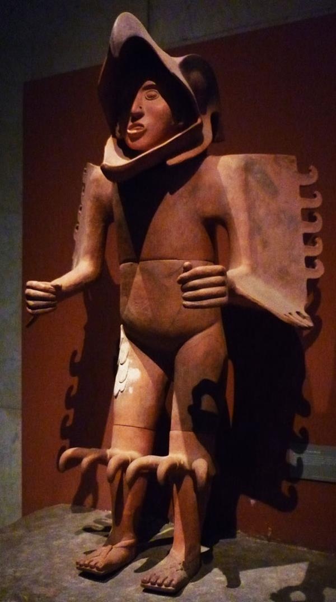
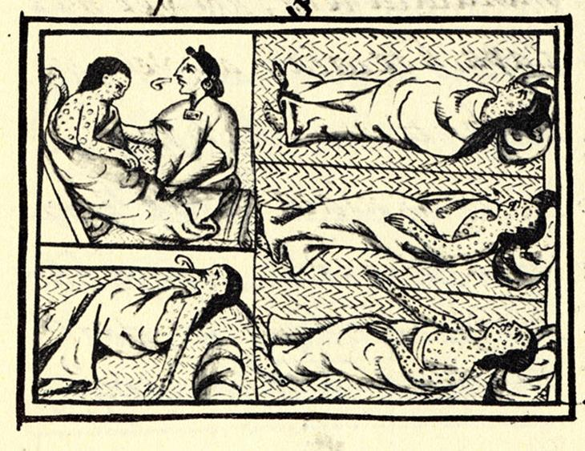

Cultura asteca
SOCIEDADE E POLÍTICA DOS ASTECAS
A sociedade dos Astecas era diversa e hierarquizada. No auge do seu poder, a sociedade desse povo chegou a ter, aproximadamente, 15 milhões de pessoas. Os Astecas cobravam impostos dos povos conquistados, sendo o pagamento de duas possíveis formas: Por meio da provisão de alimentos ou joias; e Por meio da cessão de escravos para a realização dos sacrifícios; As classes sociais entre esse povo eram reconhecidas por meio dos seus privilégios, direitos e vestimentas. No topo da sociedade, estava o imperador. Ele era considerado um representante do Tezcatlipoca, o deus supremo dos Astecas e era chamado de Huey Tlatoani. Os Astecas possuíam um panteão de vários deuses. Os imperadores viviam em grande luxo, porém também eram obrigados a ofertar o sangue para os deuses. Além disso, eles também tinham que mostrar suas habilidades como guerreiros. Abaixo do imperador se encontrava estava a nobreza, outra classe social. Estima-se que 10% da população asteca fazia parte da nobreza. Uma parte da população tinha cargos que estavam relacionados com a administração do império. Essa população era chamada de tecuhtli. Havia ainda um grupo inferior a nobreza que era chamado de pipiltin. Depois da nobreza, estavam os homens comuns. Eles eram chamados de macehualtin, um grupo que constituía uma grande massa social. Esses grupos das camadas inferiores poderiam chegar a se tornar nobres, caso se destacassem na sociedade. Por último, vinha o grupo dos escravos, chamados de tlacotin. As pessoas não nasciam escravo na sociedade asteca. O que acontecia era que eles transformavam criminosos ou pessoas endividadas em escravos. escultura de guerreiro águia asteca
CULTURA DOS ASTECAS
O maior destaque na cultura asteca ficava por conta da sua arquitetura, onde as imensas pirâmides se destacam e intrigam historiadores. A pintura, que mostrava cenas históricas e mitológicas, também era bastante desenvolvida por esses povos. Além disso, existia as esculturas que contavam principalmente com símbolos religiosos. Os Astecas tinham ainda técnicas avançadas na construção de rampas de transporte, palanques, represas e obras de irrigação. Também possuíam domínio com a escrita pictórica. Essa, por sua vez, era feita por meio de figuras e desenhos de objetos. Por exemplo, uma pessoa falando era representada com tiras de papel saindo da sua boca. Fora a escrita pictórica, os Astecas usavam também a escrita hieroglífica. Essa tinha como base sons e símbolos. Os Astecas tinham ainda um conhecimento profundo sobre matemática, medicina e astronomia. Eles também elaboraram um calendário agrícola e solar, dividindo o ano em mais de 365 dias. Os sacerdotes analisavam os astros e eram procurados para debater sobre os mais variados assuntos. O imperador, por exemplo, consultava os sacerdotes para falar sobre mudanças de tempo ou guerras.
 >